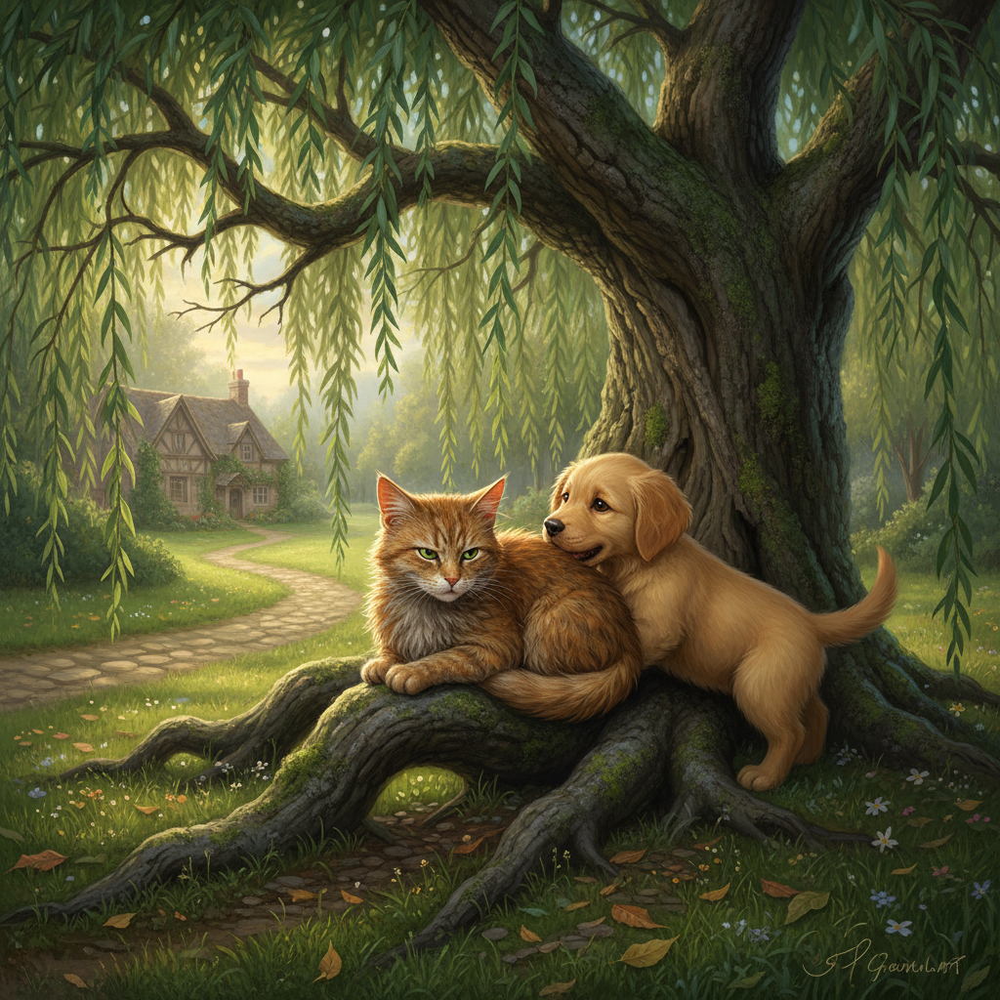

The First Meeting
2026-02-19
The old willow tree stood as a silent sentinel on the edge of the dense forest. Its gnarled branches stretched out like welcoming arms, casting dappled shadows across the dewy grass below.
Old Tom, a sleek gray tabby with a wise gaze and a gentle nature, padded silently through the underbrush. His eyes, a deep shade of amber, scanned his surroundings as if searching for something familiar. It was a crisp autumn morning, and a light mist clung to the leaves, giving the forest an ethereal quality.
As he approached the base of the willow tree, Old Tom paused. A small, golden retriever puppy with floppy ears and big brown eyes bounded towards him from behind a cluster of bushes. The puppy, named Willow, nipped playfully at his heels as they both stood beneath the sprawling branches.
New chapter tomorrow.
What readers say
I come back every day. So good!
The hook at the end gets me every time.
Already shared with my family. We read it together.